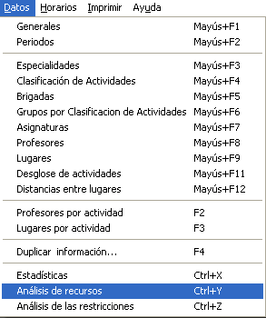
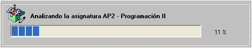
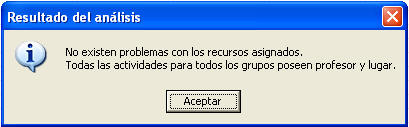
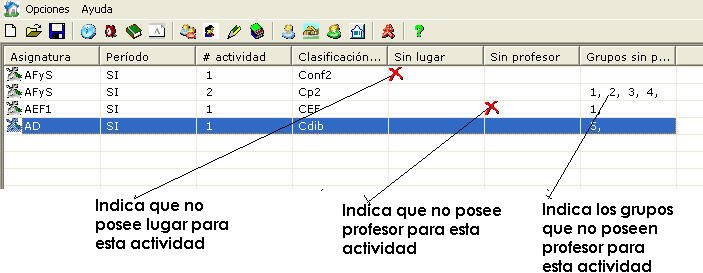

|
Análisis de recursos |
Puede ocurrir que al finalizar una generación de horarios, el sistema obtenga actividades rechazadas, y la mayoría de las veces puede ser que sea por los siguientes motivos:
Rechazos por falta de profesor
Rechazos por falta de lugar
¿Cómo conocer los recursos que faltan por asignar (Profesores por actividad y Lugares por actividad)?

Seleccione la opción Analizar Recursos del menú Datos.
Aparecerá la siguiente ventana de procesos.

3. Cuando se termine de analizar toda la información, si no existen problemas con la asignación de recursos, aparecerá el siguiente mensaje:

De lo contrario se mostrarán todos los recursos faltantes.

Cuando ocurra esto último, debe ir a la opción Profesores por actividad o Lugares por actividad según los resultados.